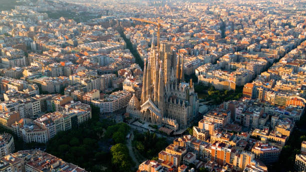
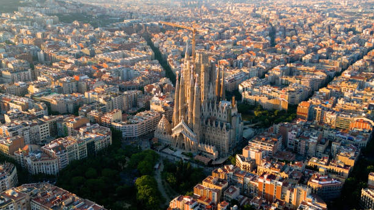
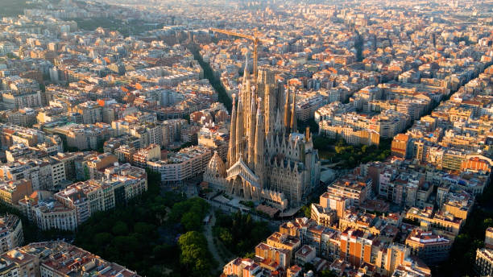

All about this beautiful city
Barcelona, the cosmopolitan capital of Spain's Catalonia region, is known for its art, architecture, and vibrant culture. Nestled between the Mediterranean Sea and the Serra de Collserola hills, this city offers a unique blend of historic charm and modern sophistication.
The city's architectural landscape is a testament to its rich history and avant-garde spirit. Antoni Gaudí's masterpieces, such as the Sagrada Família, Park Güell, and Casa Batlló, stand as icons of Catalan Modernism. Gaudí's imaginative designs, characterized by organic shapes, vibrant colors, and intricate details, have become synonymous with Barcelona’s identity. The Gothic Quarter, with its narrow medieval streets, ancient buildings, and the stunning Barcelona Cathedral, provides a stark contrast to Gaudí’s modernist works, reflecting the city’s diverse architectural heritage.
Barcelona is also renowned for its cultural scene. The city is home to numerous museums, galleries, and theaters, including the Picasso Museum, which houses an extensive collection of the artist's works. The city's vibrant arts scene is complemented by its dynamic festivals, such as La Mercè and Sant Jordi, which celebrate Catalan culture with parades, music, and traditional dances.
The Mediterranean influence is evident in Barcelona’s lifestyle and cuisine. The city’s beaches, such as Barceloneta and Bogatell, are popular spots for locals and tourists alike to relax and enjoy the sun. Barcelona’s culinary scene is a fusion of traditional Catalan dishes and contemporary gastronomy. Tapas bars, seafood restaurants, and bustling markets like La Boqueria offer a taste of the city’s rich culinary heritage.
Barcelona's commitment to innovation and sustainability is also noteworthy. The city has embraced smart city technologies to improve urban living and is known for its extensive public transportation network, pedestrian-friendly streets, and green spaces like Parc de la Ciutadella.
Overall, Barcelona is a city that seamlessly blends tradition and modernity, offering a rich tapestry of experiences for visitors and residents alike. Its architectural wonders, cultural vibrancy, and Mediterranean charm make it a truly unique and captivating destination.
The Legend of Sant Jordi Sant Jordi, or Saint George, is the patron saint of Catalonia, and his legend is deeply woven into Barcelona's culture. According to the tale, Sant Jordi saved a princess from a dragon by slaying it with his sword. From the dragon’s blood sprouted a rosebush, and Sant Jordi gave the princess a rose. This story is celebrated every year on April 23rd, known as La Diada de Sant Jordi, where the city transforms into a sea of books and roses. Men traditionally give roses to women, and women give books to men, making it a romantic and literary celebration.
The Mysterious Disappearance of the Cathedral's Builder The construction of the Barcelona Cathedral, also known as the Cathedral of the Holy Cross and Saint Eulalia, is shrouded in mystery. Legend has it that the architect responsible for the cathedral's magnificent façade disappeared under mysterious circumstances before it was completed. Some say he made a deal with the devil to ensure the cathedral's grandeur and vanished once his part of the bargain was fulfilled. The cathedral remains a stunning example of Gothic architecture, with its intricate details and impressive towers.
The Enigmatic Casa Milà (La Pedrera) Antoni Gaudí’s Casa Milà, commonly known as La Pedrera, has its own share of stories. One of the most intriguing involves its unique chimney stacks. The chimneys are said to have inspired George Lucas's design for the stormtrooper helmets in "Star Wars." Whether or not this is true, La Pedrera's undulating façade and whimsical structures continue to captivate visitors and locals alike.
